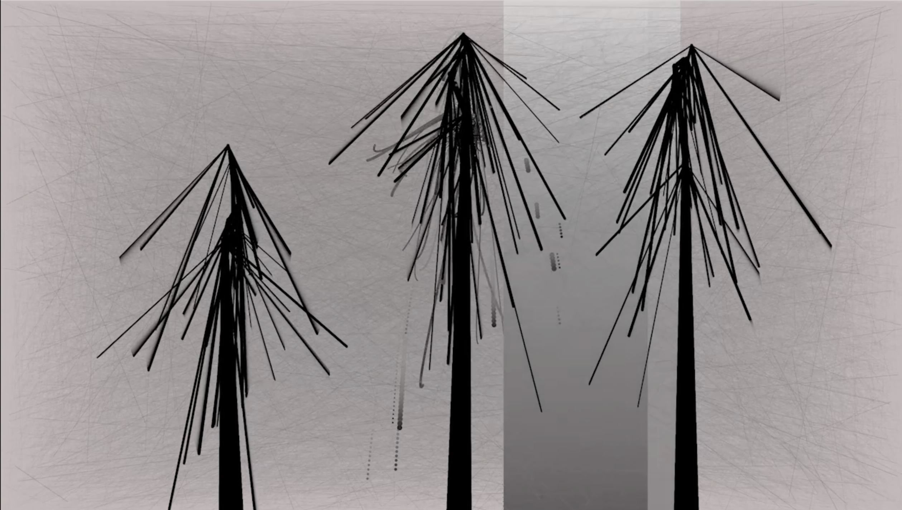
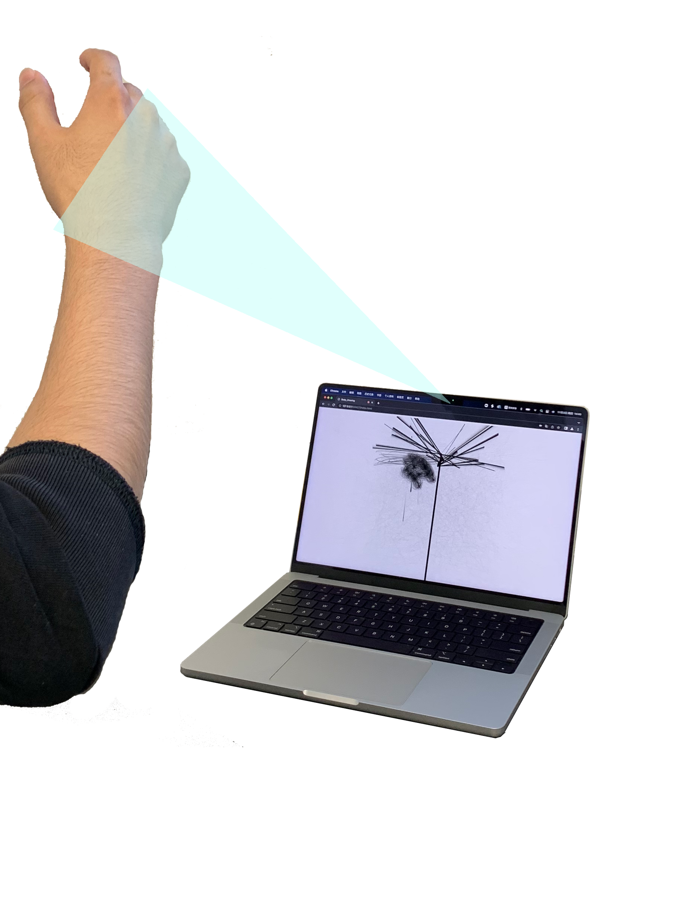

I developed this program using p5.js, p5.sound.js, and ml5.js libraries. The program detects the audience's hand and shows the hand on the screen. When the hand intersects with the “branches of the trees”, the pro- gram will play low-frequency sounds, and some “fruits” would fall from the intersec- tion to the bottom and make “dropping” sounds.
 
https://www.youtube.com/watch?v=nIE3wtZHgx4